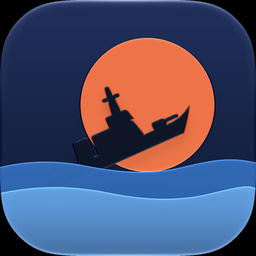

Closing SalvoThe classic fleet duel as a living 3D naval battle. Mark your targets, fold your iPhone Duo, and watch the salvo explode on the outer screen. Plays on every iPhone with iOS 17 or later.
Coming to the App StoreNo. Closing Salvo plays on every iPhone. On iPhone Duo, closing the phone fires the salvo and the cinematic plays on the outer screen; opening it brings the damage report. You can also keep playing on the outer screen while the phone is closed.
Battles against the computer are free, with no ads. Your first two-player match is free too. Full Fleet is a one-time purchase that unlocks unlimited two-player matches, the Admiral (a tougher opponent) and the night and storm seas. There is no subscription.
On the title screen, tap Sea, Difficulty or Two players to open the Full Fleet screen, then tap Restore purchase. Use the same Apple Account you bought it with.
Each admiral places their ships in turn. Every time the phone changes hands, the screen is hidden first: on iPhone Duo the phone folds and the outer screen asks you to hand it over; on other iPhones a full-screen card covers the board until the next player is ready.
Your settings are saved on your iPhone. A battle in progress is not kept if the app is closed from the app switcher; the next launch starts a fresh sea.
35: English, Türkçe, Deutsch, Français, Español, Italiano, Português (Brasil and Portugal), Nederlands, Svenska, Dansk, Norsk, Suomi, Polski, Čeština, Slovenčina, Slovenščina, Magyar, Română, Hrvatski, Català, Ελληνικά, Русский, Українська, Bahasa Indonesia, Bahasa Melayu, Tiếng Việt, ไทย, हिन्दी, 日本語, 한국어, 简体中文, 繁體中文, العربية and עברית. The game follows your iPhone’s language; you can pick another one in Settings › Apps › Closing Salvo › Language.
The music and sound effects can be switched off from the in-game menu (☰ › Sound) or with the speaker button during a battle.